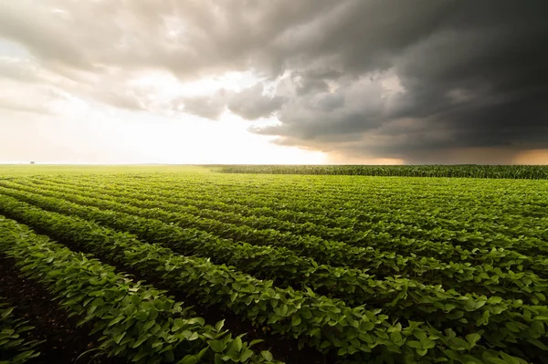
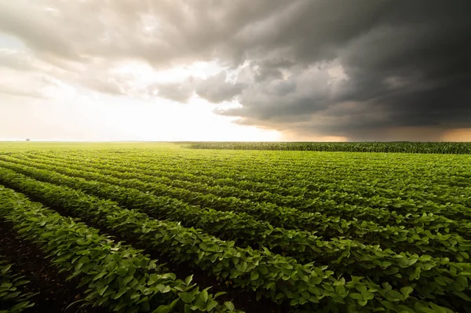

Importância da Agricultura para as Cidades
A agricultura é a base do desenvolvimento econômico, social e ambiental. Ela fornece alimentos, gera empregos e promove a sustentabilidade.
- Geração de Empregos: A agricultura é um dos setores mais importantes para a geração de emprego em áreas rurais e urbanas.
- Sustentabilidade: A agricultura sustentável é fundamental para garantir que as cidades tenham alimentos de qualidade e preservem o meio ambiente.
- Comércio e Economia: Produtos agrícolas são essenciais para o comércio, tanto local quanto internacional, contribuindo para a economia global.
 
